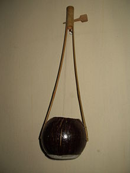

TunTuna also called iktar, ektar, yaktaro, gopichand, gopichant, gopijiantra,
Ektara is a one-string instrument most often used in traditional music from
India, Pakistan, Bangladesh and Egypt.
In origin the ektara was a regular string instrument of wandering bards and
minstrels from India and is plucked with one finger. The ektara is a drone lute
consisting of a gourd resonator covered with skin, through which a bamboo neck
is inserted.
Use of Ektara:

The ektārā player holds his instrument upright, gripping the neck just above the
resonator and plucking the playing string or strings with the index finger of
the same hand. If he is dancing, he supports the gourd resonator with his other
hand, in which he carries clusters of small bells which sound as he beats his
hand against the gourd.Pressing the two halves of the neck together loosens the
string, thus lowering its pitch. The modulation of the tone with each slight
flexing of the neck gives the ektara its distinctive sound. There are no
markings or measurements to indicate what pressure will produce what note, so
the pressure is adjusted by ear. The various sizes of ektara are soprano, tenor,
and bass. The bass ektara, sometimes called a dotara often has two strings (as
literally implied by do, "two").
The ektara is a common instrument in Baul music from Bengal. Some controversy
has arisen in recent years over the adoption and alleged corruption of Baul
music by popular bands and films in Bengal. It has become common to mix
traditional instruments like the ektara with more modern sounds in an attempt to
appeal to a wide audience, which traditional musicians feel is "destroying the
true beauty" of Baul music.
Kirtan Chants:
These instruments are commonly used in kirtan chanting, which is a Hindu
devotional practice of singing the divine names and mantras in an ecstatic call
and response format. The Ektara is used by Sadhus, or wandering holy men and for
Sufi chanting, as well as by the Bauls of Benga